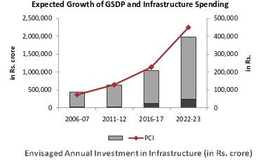
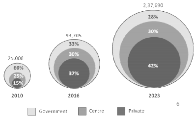
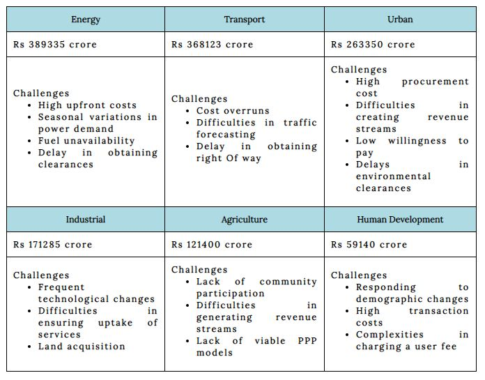
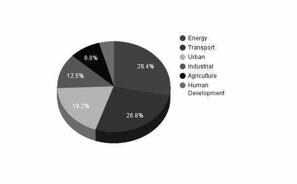

Deaths of movie stars and politicians tend to pull out crowds in large amounts but seldom do deaths spread such deep sorrow and mourning over masses like the death of Tamil Nadu Chief Minister and AIADMK supremo J Jayalalithaa. An award winning actress created a legacy of her own but on a very different front than expected. The actress had given up a stellar acting career in favor of helping the poor and hence the tears and the pain on the faces was very real. The five time Chief Minister of Tamil Nadu who was popularly known as “Amma” had combined welfare economics with market led neo liberal policies helping Tamil Nadu become the state with the second highest per capita product trailing only to Maharashtra. The list of her achievements is a rather long one as she took AIADMK to back to back election wins making them the first party to do so in 28 years. She might have achieved so much in life but the creation of the “Amma” brand is perhaps her shining star.
She rose to power for the first time in 1991,the same year that witnessed India open it’s gates to industrialization and globalization. As a woman of strong character and clear vision she transformed Tamil Nadu into a liberalized economy, to the extent that the state could be called the “Detroit of India”. We take a look at her journey over the years as we delve into a woman’s life who shall forever remain a glorious part of Indian politics.
Present Scenario
It’s safe to say that today Tamil Nadu is one of the most prosperous states of India.We take a look at the numbers to support the notion and to understand just how far has the state come under Amma’s reign.
- Tamil Nadu has been ranked as the most economically free state in India by the Economic Freedom Rankings for the States of India.
- It ranks first among the states in terms of the number of factories and industrial workers and boasts the second largest economy in India with a current GSDP of ₹13,842 billion(US$210 billion).
- The per capita GDP of Tamil Nadu was $3,000 in the year 2014–15, the third highest in India and over 50% of the state is urbanized, accounting for 9.6% of the urban population while a mere 6% of India's total population resides there.
- It is ranked first among Indian states in terms of exporting and operational SEZ which showcases its efficiency and productivity.
Policies
Amma worked meticulously on all fronts and ensured growth in all sectors be it industries , social welfare or agriculture. We take a walk through her policies and actions in a detailed manner for all the different sectors:
-
Social Welfare
Over the years, Amma developed a close relationship with the people of Tamil Nadu which was visible from the fact that the entire state went into mourning past her death, a sight that reflected the number of lives she had touched in her journey. One of the major reasons for her popularity were the welfare schemes that were implemented during her tenure.
-
Amma Unavagam
Launched two years ago, Amma Unavagam (canteen) has unanimously been celebrated for successfully providing healthy meals at nominal rates, garnering praise from the poor and daily labourers. An idli at Rs.1, plate of curd rice at Rs.3 and sambar rice at Rs.5 – the prices put a smile on countless faces who could otherwise afford so little. The Chennai Corporation runs these canteens across the city through women’s self-help groups which alleviates these women through employment. The success of the “Amma canteen” triggered the launch of the Amma brand. Amma cement, Amma water were some of the many food and industry products that were made available to the poor at nominal prices. The lower classes also benefitted from schemes that provided table fan, mixer and grinder etc for free.
-
The Cradle baby scheme
Amma believed in working for the poor and was never shy of making bold decisions and she proved the same through this welfare scheme which allowed mothers to anonymously hand over their newborn children to the government, which would take care of them or give them up for adoption.The State was reeling under female foeticide and gender-based abortions were rampant and this move put an end to the horrific practises that were prevalent.
-
Amma Unavagam
-
Automobile Industries
Today, Tamil Nadu is one of the top 10 automobile hubs in the world but the picture was completely different when Amma had taken over. Chennai at present has the capacity to produce about 1.4 million cars a year, or three cars every minute.

Credits:http://www.isc.hbs.edu/- It was under Amma’s first tenure that Ford Motor Company forayed into India in 1995. Ford's decision to build a base in Chennai was a breakthrough for the automobile industry in Tamil Nadu.
- The Tamil Nadu government led by Amma signed a Memorandum of Understanding with five automobile majors in 2012 with an investment of ₹ 5,700 crore to create 9,530 jobs.
- The Tamil Nadu Automobile and Auto Components Policy 2014, the first-of-its-kind automobile policy in 2014 was another one of Amma’s jewels as the policy aims to make Chennai one of the top five centres in the world in the automobile and components space.
-
Solar Energy
Amma planned to invest a whooping Rs. 4126 crore worth in the energy sector with the objective of attaining energy security and reducing carbon emissions, pushing Tamil Nadu as a solar hub. She aimed to generate 3000 MW of solar energy by 2015 to pave the way towards a cleaner and efficient future. The scheme was a commendable attempt to encourage indigenous solar manufacturing units in the state, and also promote Research and Development in the solar energy sector and hybrid systems.
FUTURE GOALS - Vision 2023
Amma was known for her boldness and determination to take on any and all challenges but perhaps the most audacious of all her projects was The Vision Tamil Nadu 2023 which was launched on March 22, 2012. The Vision was to become India’s most prosperous and progressive state, one that is free from poverty, and one where its people have access to all the basic amenities of a modern society so they are able to live in harmonious engagement with the environment and with the rest of the world.
-
Key Outcomes Expected
- The per capita income of TN’s residents will reach $ 10,000 per annum (at 2010 prices) by 2023 - in line with that of Upper Middle Income countries.
- TN would attain a high standard of social development , with the Human Development Index of the state rising to match those of developed countries by 2023.
- TN would provide its residents high quality infrastructure all over the state that can stand at par with the best in the world.
-
Vision 2023 targets
- Vision 2023 envisages infrastructure investment of Rs. 15 lakh crore.
- Infrastructure spending as a percentage of GSDP is expected to rise from the current level of 5% to 11.5% by 2023.
- 42% of financing for infrastructure is expected from the private sector.


Credits: http://www.tnidb.tn.gov.in/
| Outcome Expected | Strategies | |
|---|---|---|
| 1. Economic Prosperity | 2. Inclusive Growth | Increasing the share of manufacturing |
| Making SMEs vibrant | ||
| 3. Health for all | 4. World Class Infrastructure | TN: The Knowledge Capital and Innovation Hub |
| Specialisation in service offerings | ||
| 5. Healthy Investment Climate | 6. Knowledge Hub and Innovation Capital | Thrust on skill development |
| Thrust on social welfare projects for inclusive growth | ||
| 7. Peace Security and Prosperity | 8. Nurturing Heritage and Preserving Ecology | Improving agricultural productivity |
| Transforming 10 cities into world class cities | ||
| 9. Protection against vulnerability | 10. Improving quality of institutions and governments | Develop signature infrastructure projects |
| Promote PPP in infrastructure project creation and service provision |
Every sector has been given importance and huge investments have been planned in each, here are some details


A Pi-Chart to summarize the investment strategy in the various sectors
A walk through her political career must have already enlightened you as to why she was so appreciated and loved by the masses. A true leader with compassion and earnest behaviour is something all states and nations require and the demise of one such gem is indeed a matter of great sorrow. Few politicians in India have been able to blend populism with good governance the way Amma was able to and we hope her legacy will live forever.
-Written by Palak Harwani, Rituparna Mandal, Subham Rajgaria.